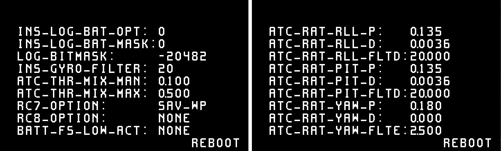
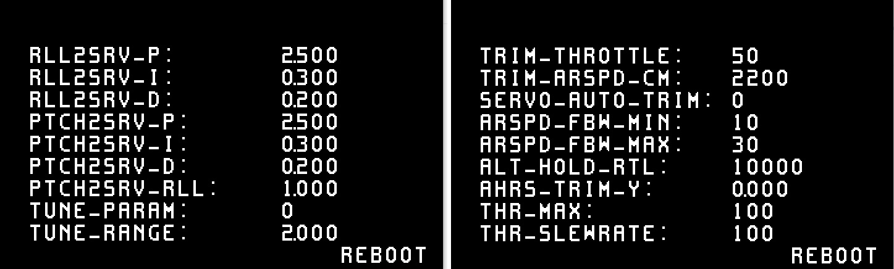
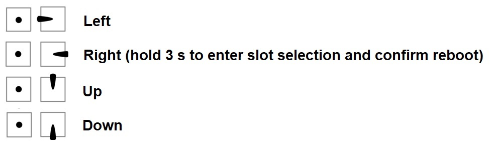

OSD based parameter menu¶
This allows to set and adjust parameters using the ArduPilot onboard OSD and an RC transmitter’s stick input. There’s two additional OSD screens available (OSD5 and OSD6), with 9 “slots” each to hold parameters. The screens display a default set of parameters to start with. Additionally, it is possible to change the parameter used in a respective slot directly (on-screen) using stick inputs, or using MAVProxy’s osd-module command-line setup.
Copter default screens:¶
{kind=link}
Plane default screens:¶
{kind=link}
The RC transmitter’s roll and pitch stick input is used to navigate through the screen, pick a parameter and adjust the parameter value. Parameter values can be adjusted in disarmed state only.
Additionally there’s a “save and reboot” button on each screen that allows to save the adjusted settings and reboot the flightcontroller if required. It defaults to “reboot”, will auto-switch to “save” if a parameter value has been altered, and switch back to “reboot” after saving is completed.
Note
Using the “save” button after adjusting a parameter will make the adjustments persistent, otherwise the value will be reset to its prior state after a reboot.
Accessing parameter screens¶
To enable the parameter screens, set OSD5_ENABLE and OSD6_ENABLE = 1. Parameter screens can be accessed in the same way the conventional osd screens are accessed. See the documentation on OSD screens and switching for reference. When one of the parameter screens is selected, adjustments can be made in disarmed state only. If a parameter screen is selected inflight, the screen allows display only. This allows live monitoring of automatic parameter adjustments, i.e. when performing autotune procedures or automatic servo trims.
Note
For systems not using an actual OSD, as when using CRSF with no OSD or DJI OSD, and running OpenTX transmitters with CRSF configuration script, setting OSD_TYPE =3 (MSP), will allow the OpenTX CRSF script on the transmitter to change these parameters.
Menu navigation¶
Use the RC transmitter’s roll and pitch input to navigate through the parameter screen. UP / DOWN and LEFT / RIGHT will navigate through the screen’s parameter slots. The selected parameter will blink. Move right on the selected parameter to adjust its value using up or down stick input. Leave the selection with left roll stick input. On a typical mode 2 type transmitter this would be the right gimbal stick:
{kind=link}
Parameter slot scroll-selection¶
Holding roll right for > 3 seconds on a parameter’s value will highlight both the selected parameter and its value (blink). This allows you to scroll through the full list of parameters and place another parameter into that respective slot using pitch up and down stick input. Move left to exit parameter selection and get back into standard screen navigation.
Note
OSD based parameter adjustment is designed to allow basic adjustments without any additional data link or GCS setup required. However, some parameters with exceptionally wide value ranges, as well as complex bitmap-type parameters might not be ideal for adjustment using parameter OSD.
Parameter range, increment and type-mnemonics¶
OSD based parameter menu uses parameter metadata to estimate a useful value range and incrementation for each parameter. Additionally, support for the display of human-readable abbreviations instead of numeric values is provided for the following parameter types:
flightmodes
servo functions
serial protocols
RC aux options
failsafe actions
Note
This feature may have limitations on certain parameters with exceptionally wide value ranges and when handling bitmap-type parameters.
Populating a screen’s parameter slots using MAVProxy’s OSD module¶
OSD based parameter setting includes a MAVProxy module to populate each screen’s parameter slots.
Connect your autopilot, connect tp MAVProxy and load the OSD module by typing module load osd
Note
The osd module is supported by MAVProxy 1.8.21 and later. Type pip install --upgrade pymavlink MAVProxy --user
to update MAVProxy if required.
Use the following syntax to set and show a parameter, its type, minimum, maximum and increments:
:code:` osd param-set <screen> <index> <name> (<type> | <min> <max> <increment>)`
osd param-show <screen> <index>
where
screen is the desired parameter screen number (5 or 6)
index is the desired parameter slot (1 - 9)
NAME is the desired parameter’s full name (case sensitive)
type allows to set mnemonics to
FLIGHT_MODESERIAL_PROTOCOLSERVO_FUNCTIONAUX_FUNCTION(for RC options)FAILSAFE_ACTION(plane: battery low and critical failsafe actions; copter: failsafe options)FAILSAFE_ACTION_1(plane: short failsafe actions; copter: throttle and GCS failsafe options)FAILSAFE_ACTION_2(plane: long failsafe actions; copter: battery failsafe actions)NONE
MIN allows to set a lower limit to the setteable range
MAX allows to limit the settable range’s maximum
INCREMENT allows to use specific increments if required
Examples¶
To set OSD5 parameter1 to TRIM_THROTTLE, type osd param-show 5 1 TRIM_THROTTLE
To set OSD6 parameter2 to FLTMODE1 using respective mnemonics, type osd param-set 6 2 FLTMODE1 FLIGHT_MODE
To set OSD5 parameter2 to LIM_ROLL_CD, limiting range from 2000 - 6000 with increments of 100, type osd param-set 5 2 LIM_ROLL_CD 2000 6000 100
To show what OSD6 parameter2 is set to, type osd param-show 6 2
Note
Be aware that some TYPE mnemonic options are vehicle-specific. Make sure to apply mnemonics to the correct vehicle type in order to avoid unexpected results